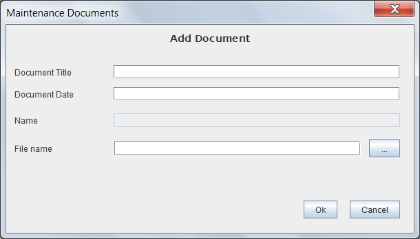

This form allows to add documents to the repository introducing the common and basic metadata. It does not allow to choose the documentary type, which will not be able to change later, so that only it must be used when the document is of generic type./p>
The document is added in the current folder and inherits the ACL of the current folder.
The user must have permissions of writing on the current folder, in another case yhe user will not be able to insert documents.
It should be entered the information:

Required fields for each document type are highlighted. By placing the cursor or mouse over each field, it whill be showed a tiptool or a text message in the bottom of the form with information on the field and (in the case of fields of type date or time) the expected format. The fields of type date / time values must be valid and follow the expected format, otherwise the field is cleared and the value is rejected.
In the event of an error (lack of user permissions, communication error, incorrect date, etc.), the operation is canceled and the user will communicate the reason for the error.